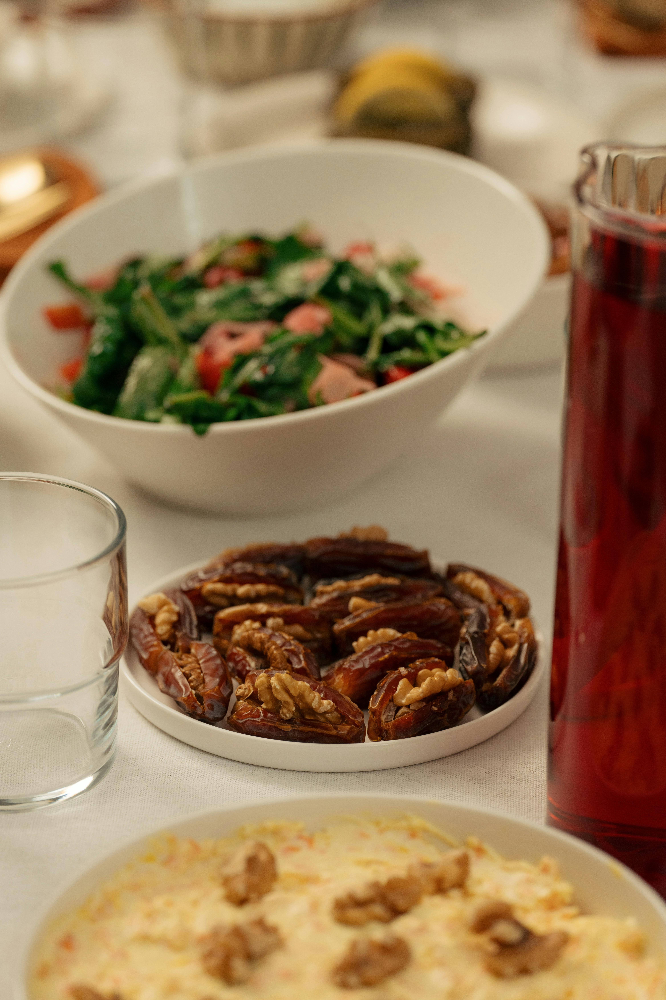
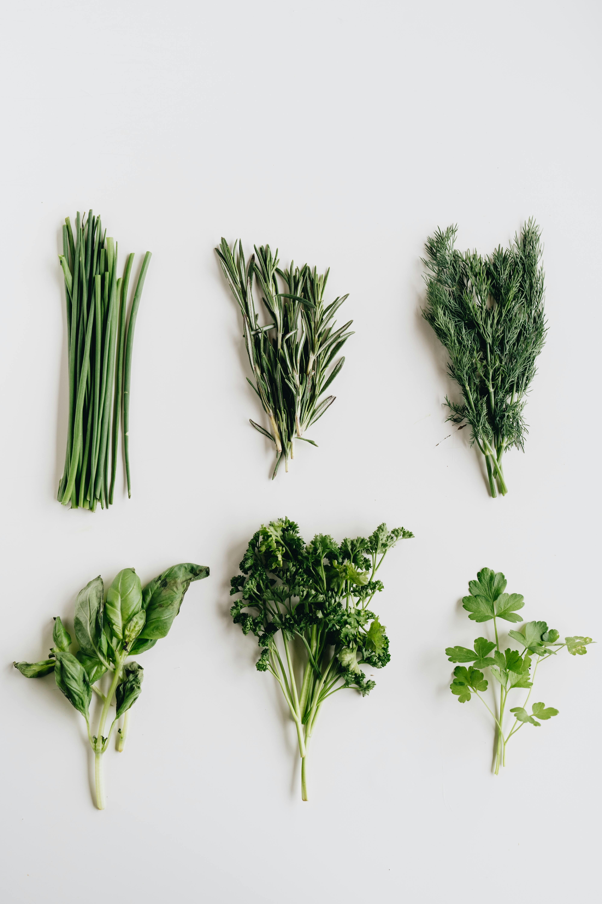
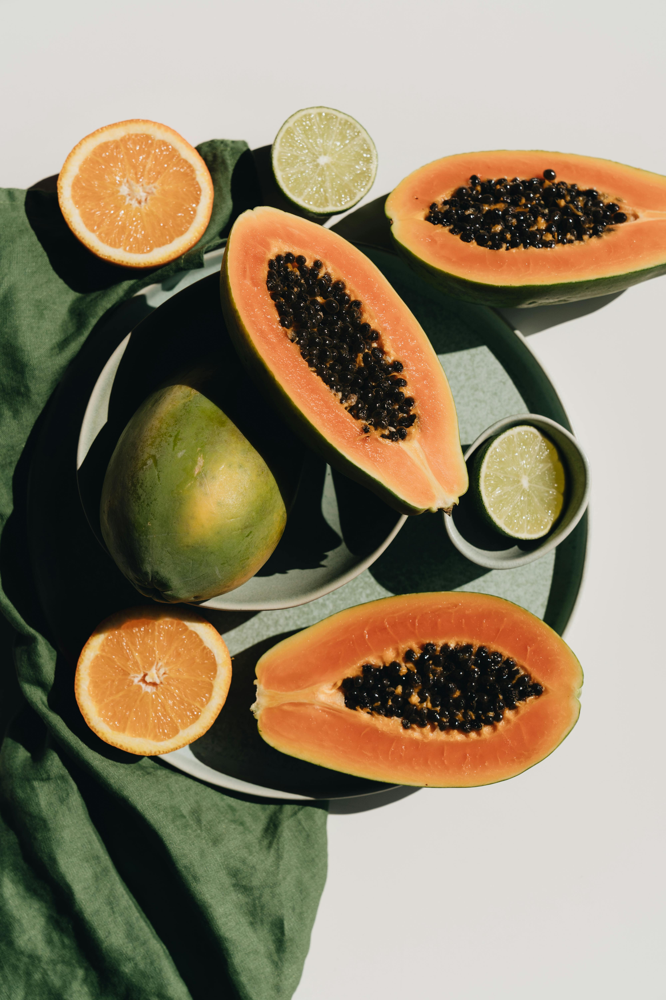

Simple & Tasty Recipes
With the hyper-convenience of modern life,many of us can only operate a microwave a home-cook meal is now a luxury
With the hyper-convenience of modern life,many of us can only operate a microwave a home-cook meal is now a luxury

Our Foods
Meat is animal tissue, often muscle, that is eaten as food. Humans have hunted and farmed other animals for meat since prehistoric times. The Neolithic Revolution allowed the domestication of animals including chickens, sheep, goats, pigs, horses, and cattle, starting around 11,000 years ago. Since then, selective breeding has enabled farmers to produce meat with the qualities desired by producers and consumers. 
This Spring Mix Salad recipe is a crisp, green, and delectable side that never goes out of style. Juicy tomato, fresh spring lettuce mix, and subtly sweet red onion combine for a veggie-packed recipe that works with nearly any main. Plus, who can resist tangy and fresh Lemon Balsamic Dressing? 
Sandwiches are pretty great, aren’t they? They possess qualities both practical and sentimental. They can be as simple or as complex as one’s heart desires, and they are capable of satisfying the tastes and preferences of even the most fastidious appetites. They’re so, so delicious

This is a list of dried foods. Food drying is a method of food preservation that works by removing water from the food, which inhibits the growth of bacteria and has been practiced worldwide since ancient times to preserve food. Where or when dehydration as a food preservation technique was invented has been lost to time, but the earliest known practice of food drying is 12000 BC by inhabitants of the modern Middle East and Asia.

The possible health benefits of consuming spinach include improving blood glucose control in people with diabetes, lowering the risk of cancer, and improving bone health.

Carica papaya is the scientific name of the orange and green fruit known more commonly as papaya. It tastes sweet and has a soft texture that many find appealing. The seeds are also edible, although they’re more bitter than the fruit itself. |
Our Food BlogsFact About Indian Foodorthern Indian cuisine uses more milk products than that of southern India. It’s also less spicy than southern cuisine Read More
Diffrent Type of BurgerThe burger is one of the most satisfying yet simple foods, an icon of modern society. Read More
Delicious Checken RecipesWe’ve rounded up our 60 best chicken breast recipes, all of which are pretty easy, and super delicious. Let’s dive in! Read More |